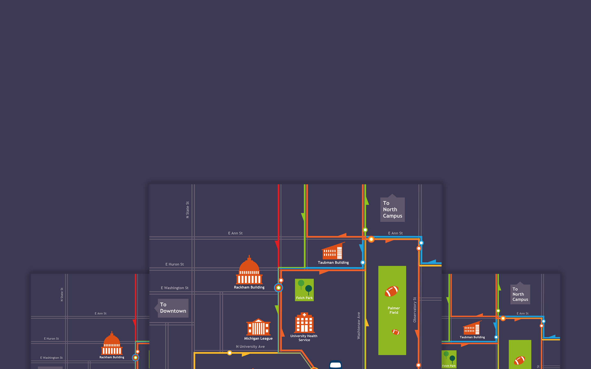

Posters, Badges, Web Forms, and Information Visualization

The two sets of badges follow different color palette and adopt different shapes, where
the first is more consistent with University of Michigan colors and the second gives more freedom.
- Social media: people have a second self on social media and communicate with each other through this self.
- Data science: data is organized and made meaningful.
- Information visualization: information is categorized and graphed to convey message.
- Humanatics: in the dichotomy of human and machines, people maintain their warm and multi-faceted side.
The school bus of U-M is complex and confusing to freshmen since the routes are one-way and complicated. This map aims to visualize the bus directions and how to get to different locations via school bus.
This poster aims to recruit children volunteers for UM hospital experiments. The composition of this poster comes from the movement of the child and the color comes from the t-shirt. These elements all make the poster more dynamic and attractive to children.
Unlike the poster, this web form is for parents who will sign up for their children. Clear font hierachy and distinct buttons make the form easy to read and pleasant to use. The dynamic heading also makes this form more vivid.